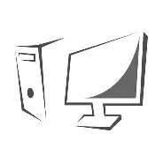
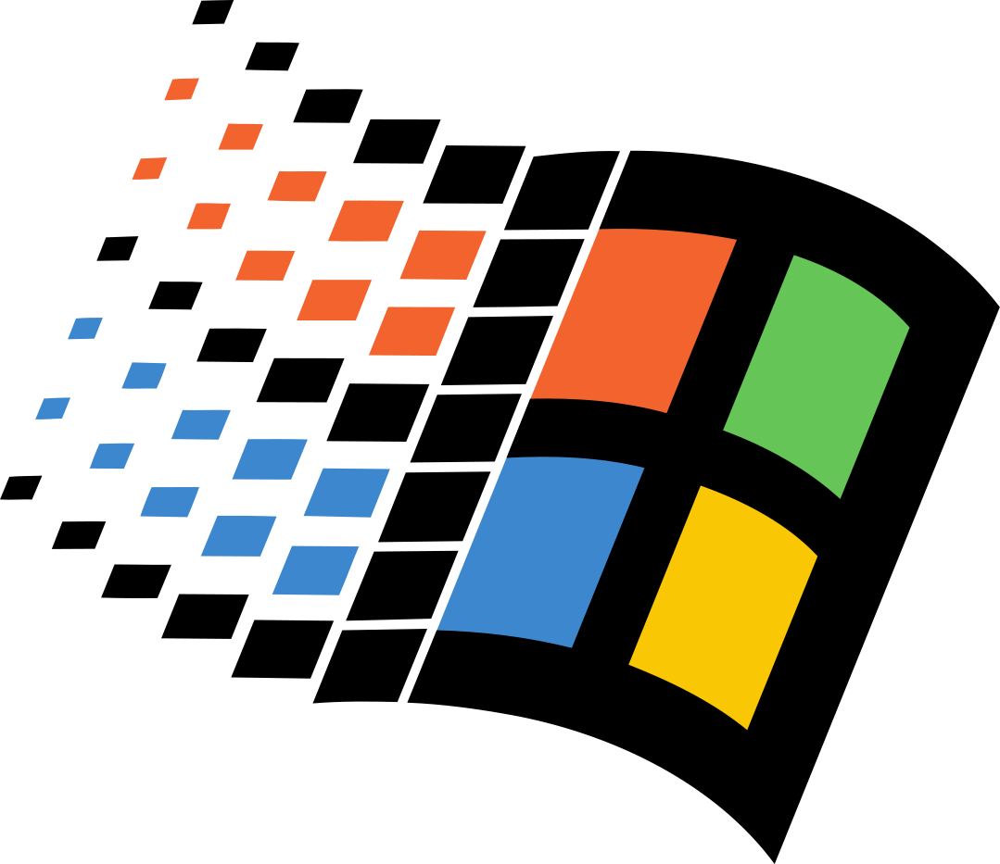

| Bienvenue dans le merveilleux monde logiciel de l'ordinateur! Je vous le ferait dire que c'est la partie la plus importante et complexe de l'ordinateur! Sans la partie logiciel, l'ordinateur ne saurait que faire à son démarrage! - présenté par Tasnim |
| Cet [ordinateur] était un véritable musée. Tous les [logiciels] du règne [informatique] s'y trouvaient étiquetés avec l'ordre le plus parfait, suivant les trois grandes divisions des [systèmes d'exploitations], [applications] et [utilitaires & pilotes]. - Jules Verne, Voyage au Centre de la Terre probablement |
|---|